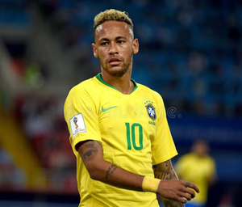
Neymar Jr
Neymar, in full Neymar da Silva Santos, Jr., Brazilian football (soccer) player who was one of
the most prolific scorers in his country’s storied football history.
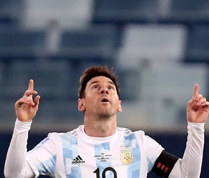
Lionel Messi
Lionel Messi, in full Lionel Andrés Messi, also called Leo Messi, Argentine-born football
(soccer) player who was named Fédération Internationale de Football Association (FIFA) world
player of the year five times .
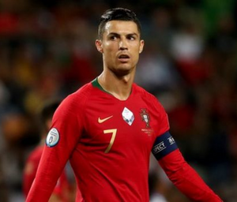
Cristiano Ronaldo
Cristiano Ronaldo, in full Cristiano Ronaldo dos Santos Aveiro, Portuguese football (soccer)
forward who was one of the greatest players of his generation.
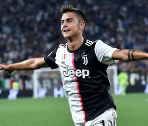
Paulo Dybala
Paulo Exequiel Dybala is an Argentine professional footballer who plays as a forward for Serie A
club Juventus and the Argentina national team.
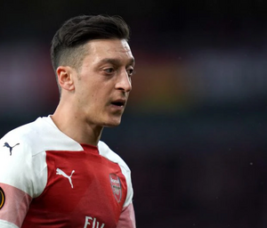
Mesut Ozil
Ozil was one of the stars of Germany's 2014 World Cup-winning side and won three FA Cups for
Arsenal.The last time Özil featured in a matchday squad for Arsenal was on 25 June against
Southampton.
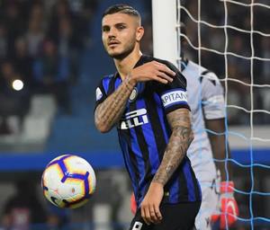
Mauro Icardi
Mauro Emanuel Icardi is an Argentine professional footballer who plays as a striker for Ligue 1
club Paris Saint-Germain and the Argentina national team.
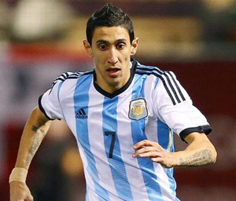
Di Maria
Ángel Fabián Di María is an Argentine professional footballer who plays for Ligue 1 club Paris
Saint-Germain and the Argentina national team. He can play as either a winger or attacking
midfielder.
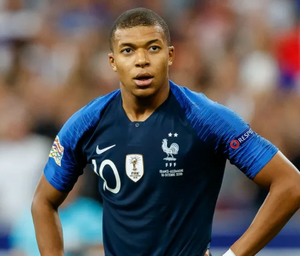
Kylian Mbappé
Kylian Mbappé Lottin is a French professional footballer who plays as a forward for Ligue 1 club
Paris Saint-Germain and the France national team.
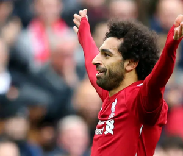
Mohamed Salah
Mohamed Salah Hamed Mahrous Ghaly is an Egyptian professional footballer who plays as a forward
for Premier League club Liverpool. Considered one of the best players in the world,he is known
for his finishing, dribbling, and speed.
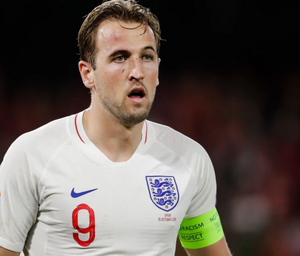
Harry Kane
Harry Edward Kane MBE is an English professional footballer who plays as a striker for Premier
League club Tottenham Hotspur. Regarded as one of the best strikers in the world, Kane is known
for his prolific goalscoring record and ability to link play.
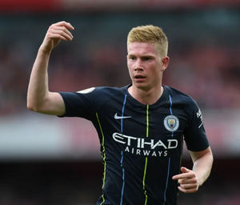
Kevin De Bruyne
Kevin De Bruyne is a Belgian professional footballer who plays as a midfielder for Premier
League club Manchester City, where he is vice-captain. He is one of just three players to have
won the PFA Players' Player of the Year award back to back.
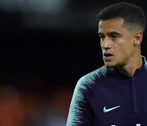
Philippe Coutinho
Philippe Coutinho Correiais a Brazilian professional footballer who plays as an attacking
midfielder or winger for Spanish club Barcelona. He is known for his combination of vision,
dribbling and ability to conjure curving long-range strikes.